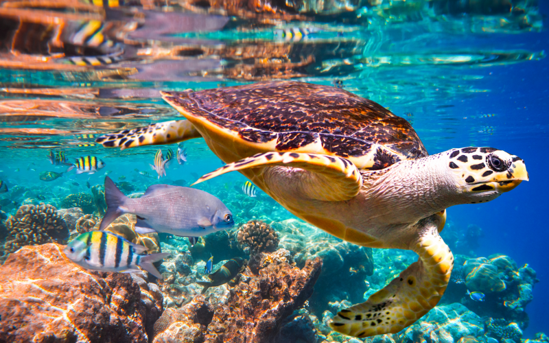

Extinction threat to wild species: Call for action now

Photo courtesy of National Global News.ca
Nature is critical to survival as conservation promotes biodiversity, but under increasing stress, threats, and urgency, will humanity accomplish changes that will require transformations of the relationship of human communities to nature?
According to United Nations, “human activity has altered almost 75 percent of the Earth’s surface.” And approximately 1 million animal and plant species are in a serious call for extinction. The report of 2019 Global Assessment Report on Biodiversity and Ecosystem Service, calls for trans-formative and sustainable changes to renew and protect nature as drastic declines and collapses are seen in the numbers affecting the very foundation of the world economies, food security, livelihoods, health, and quality of life among others.
Human-induced activities pose major challenges to sustainable development. Deforestation and desertification intensify the need for improving livelihoods, reducing vulnerabilities and risks for the economy. (United Nations, Sustainable Development Goals)
More than 42,000 species are facing the threat of extinction now according to the global organization that monitors threats to wildlife and other organisms. More than 190 countries posed to compromise in an agreement to reduce casualties, and reverse the damage to ecosystems and wildlife species. It was stated that climate change alone affects two out of five marine species. (Durham Radio News via Head Topics Canada, 2022)

Photo courtesy of United Nations
“The marine species that we report on today are facing a perfect storm of threats, an onslaught of threats,” said Jane Smart, the head of the conservation organization’s science center.
“We are seeing – and I am a scientist, I don’t say this lightly – a decimation of marine life.”
What we know about what’s dead and buried and the time ahead makes the urgency of the problem comprehensible. The call for action to prevent extinction is now as the species are in an irredeemable loss, and without them, humanity will not survive. (Bolam Fc, 2020)
An excerpt from the book,The Sixth Extinction (2015) by journalist and Pulitzer Prize winner Elizabeth Kolbert says, "Human activity, the consumption of fossil fuels, the acidification of the oceans, pollution, deforestation, and forced migrations threaten life forms of all kinds. It is estimated that one-third of corals, freshwater mollusks, sharks, and rays, one-fourth of all mammals, one-fifth of all reptiles, and one-sixth of all birds are heading towards extinction". This reverberating paragraph taken from the book resonates with the current situation on the planet Earth.
{kind=link}
{kind=link}